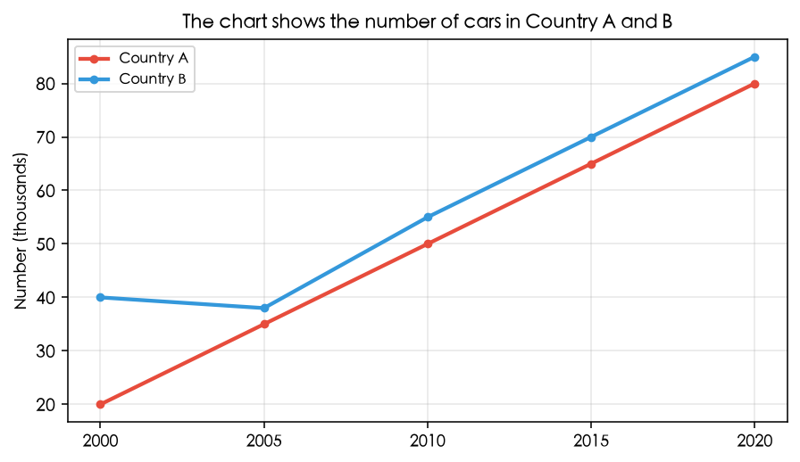

解题三步 · 第一步
找三要素（时态 + 单位 + 主语）
读图前先确认：用什么时态、数据单位是什么、主语从哪找。
读图示例

练习：从图表读取时间（时态）、数值（单位）、类别（主语）
| 要素 | 说明 |
|---|---|
| 时态 | 根据图表时间判断 |
| 单位 | 如 100 → 1000（看图表轴/表头） |
| 主语 | 在 "show" 后或小标题里找 |
批注： 7 thousand (million) 没有 s
读图前先确认：用什么时态、数据单位是什么、主语从哪找。

| 要素 | 说明 |
|---|---|
| 时态 | 根据图表时间判断 |
| 单位 | 如 100 → 1000（看图表轴/表头） |
| 主语 | 在 "show" 后或小标题里找 |